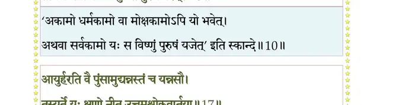
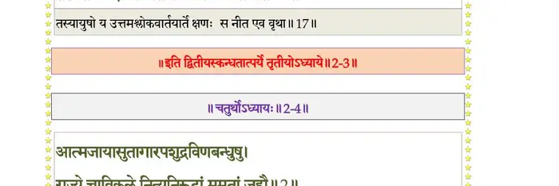

स्कन्ध 2 · अध्याय 3
श्लोक १
श्रीशुक उवाच–
एवमेतन्निगदितं पृष्टवान् यद्भवान्मम ।
नृणां यन्म्रियमाणानां मनुष्येषु मनीषिणाम्।। १ ।।
एवमेतन्निगदितं पृष्टवान् यद्भवान्मम ।
नृणां यन्म्रियमाणानां मनुष्येषु मनीषिणाम्।। १ ।।
श्लोक २
ब्रह्मवर्चसकामस्तु यजेत ब्रह्मणस्पतिम् ।
इन्द्रमिन्द्रियकामस्तु प््राजाकामः प््राजापतीन्।। २ ।।
इन्द्रमिन्द्रियकामस्तु प््राजाकामः प््राजापतीन्।। २ ।।
श्लोक ३
देवीं मायां तु श्रीकामस्तेजस्कामो विभावसुम् ।
वसुकामो वसून् रुद्रान् वीर्यकामस्तु वीर्यदान्।। ३ ।।
वसुकामो वसून् रुद्रान् वीर्यकामस्तु वीर्यदान्।। ३ ।।
श्लोक ४
अन्नाद्यकामस्त्वदितिं स्वर्गकामोऽदितेः सुतान् ।
विश्वान्देवान् राष्ट्रकामः साध्यान् संसाधको विशाम्।। ४ ।।
विश्वान्देवान् राष्ट्रकामः साध्यान् संसाधको विशाम्।। ४ ।।
श्लोक ५
आयुष्कामोऽश्विनौ देवौ पुष्टिकाम इलां यजेत् ।
प््रातिष्ठाकामः पुरुषो रोदसी लोकमातरौ।। ५ ।।
प््रातिष्ठाकामः पुरुषो रोदसी लोकमातरौ।। ५ ।।
श्लोक ६
रूपाभिकामो गन्धर्वान् स्त्रीकामोऽप्सरउर्वशीम् ।
आधिपत्यकामः सर्वेषां यजेत परमेष्ठिनम्।। ६ ।।
आधिपत्यकामः सर्वेषां यजेत परमेष्ठिनम्।। ६ ।।
श्लोक ७
यज्ञं यजेद्यशस्कामः कोशकामः प््राचेतसम् ।
विद्याकामस्तु गिरिशं दाम्पत्यार्थ उमां सतीम्।। ७ ।।
विद्याकामस्तु गिरिशं दाम्पत्यार्थ उमां सतीम्।। ७ ।।
श्लोक ८
धर्मार्थमुत्तमश्लोकं तन्तुं तन्वन् पितॄन्यजेत् ।
रक्षाकामः पुण्यजनानोजस्कामो मरुद्गणान्।। ८ ।।
रक्षाकामः पुण्यजनानोजस्कामो मरुद्गणान्।। ८ ।।
श्लोक ९
राज्यकामो मनून् देवान्निर्ऋतिं त्वभिचरन्यजेत् ।
ग्रामकामो यजेत्सोममकामः पुरुषं पुमान्।। ९ ।।
ग्रामकामो यजेत्सोममकामः पुरुषं पुमान्।। ९ ।।
श्लोक १०
अकामः सर्वकामो वा मोक्षकाम उदारधीः ।
तीव्रेण भक्तियोगेन यजेत पुरुषं परम्।। १० ।।
तीव्रेण भक्तियोगेन यजेत पुरुषं परम्।। १० ।।
भागवततात्पर्यनिर्णय

श्लोक ११
एतावानेव यजतामिह निःश्रेयसोदयः ।
भगवत्यचलो भावो यद्भागवतसङ्गतः।। ११ ।।
भगवत्यचलो भावो यद्भागवतसङ्गतः।। ११ ।।
श्लोक १२
ज्ञानं यदा प््रातिनिवृत्तगुणोर्मिचक्रमात्मप््रासाद उभयत्र गुणेष्वसङ्गः ।
कैवल्यसम्भृतपथस्त्वथ भक्तियोगः को निर्वृतो हरिकथासु रतिं न कुर्यात् ।। १२ ।।
कैवल्यसम्भृतपथस्त्वथ भक्तियोगः को निर्वृतो हरिकथासु रतिं न कुर्यात् ।। १२ ।।
श्लोक १३
शौनक उवाच–
इत्यभिव्याहृतं राजा निशम्य भरतर्षभः ।
किमन्यत्पृष्टवान् भूयो वैयासकिमृषिं कविम्।। १३ ।।
इत्यभिव्याहृतं राजा निशम्य भरतर्षभः ।
किमन्यत्पृष्टवान् भूयो वैयासकिमृषिं कविम्।। १३ ।।
श्लोक १४
एतच्छुश्रूषतां विद्वन् सूत नोऽर्हसि भाषितुम् ।
कथा हरिगुणोदाराः सतां स्युः सदसि ध्रुवम्।। १४ ।।
कथा हरिगुणोदाराः सतां स्युः सदसि ध्रुवम्।। १४ ।।
श्लोक १५
स वै भागवतो राजा पाण्डवेयो महारथः ।
बालः क्रीडनकैः क्रीडन् कृष्णक्रीडां य आददे।। १५ ।।
बालः क्रीडनकैः क्रीडन् कृष्णक्रीडां य आददे।। १५ ।।
श्लोक १६
वैयासकिश्च भगवान् वासुदेवपरायणः ।
उरुगायगुणोदाराः सतां स्युर्हि समागमे।। १६ ।।
उरुगायगुणोदाराः सतां स्युर्हि समागमे।। १६ ।।
श्लोक १७
आयुर्हरति वै पुंसाम् उद्यन्नस्तञ्च यन्नसौ ।
तस्यर्ते यः क्षणो नीतः उत्तमश्लोकवार्तया।। १७ ।।
तस्यर्ते यः क्षणो नीतः उत्तमश्लोकवार्तया।। १७ ।।
भागवततात्पर्यनिर्णय

श्लोक १८
तरवः किन्न जीवन्ति भस्राः किं न श्वसन्त्युत ।
न खादन्ति न मेहन्ति किं ग्राम्याः पशवोऽपरे।। १८ ।।
न खादन्ति न मेहन्ति किं ग्राम्याः पशवोऽपरे।। १८ ।।
श्लोक १९
श्वविड्वराहोष्ट्रखरैः स तुल्यः पुरुषः पशुः ।
न यत्कर्णपथोपेतो जातु नाम गदाग्रजः१।। १९ ।।
न यत्कर्णपथोपेतो जातु नाम गदाग्रजः१।। १९ ।।
श्लोक २०
बिले बतोरुक्रमविक्रमान् ये न शृण्वतः कर्णपुटे नरस्य ।
जिह्वाऽसती दार्दुरिकेव २याऽसौ न चेत्प््रागायत्युरुगायगाथाम्।। २० ।।
जिह्वाऽसती दार्दुरिकेव २याऽसौ न चेत्प््रागायत्युरुगायगाथाम्।। २० ।।
श्लोक २१
भारः परं पट्टकिरीटजुष्टमप्युत्तमाङ्गं न नमेन्मुकुन्दम् ।
शावौ करौ नो कुरुतः सपर्यां हरेर्लसत्काञ्चनकङ्कणौ वा।। २१ ।।
शावौ करौ नो कुरुतः सपर्यां हरेर्लसत्काञ्चनकङ्कणौ वा।। २१ ।।
श्लोक २२
बर्हायिते ते नयने नराणां लिङ्गानि विष्णोर्न निरीक्षतो ये ।
पादौ नृणां तौ द्रुमजन्मभाजौ क्षेत्राणि नानुव्रजतो हरेर्यौ।। २२ ।।
पादौ नृणां तौ द्रुमजन्मभाजौ क्षेत्राणि नानुव्रजतो हरेर्यौ।। २२ ।।
श्लोक २३
जीवच्छवो भागवताङ्घ्रिरेणुं न जातु मर्त्योऽभिलषेत यस्तु ।
श्रीविष्णुपद्या मनुजस्तुलस्याः श्वसच्छवो यस्तु न वेद गन्धम्।। २३ ।।
श्रीविष्णुपद्या मनुजस्तुलस्याः श्वसच्छवो यस्तु न वेद गन्धम्।। २३ ।।
श्लोक २४
तदश्मसारं हृदयं बतेदं यद्गृह्यमाणैर्हरिनामधेयैः ।
न विक्रियेताथ मुखे विकारो नेत्रे जलं गात्ररुहेषु हर्षः।। २४ ।।
न विक्रियेताथ मुखे विकारो नेत्रे जलं गात्ररुहेषु हर्षः।। २४ ।।
श्लोक २५
अथाभिधेह्यङ्ग मनोऽनुकूलं प््राभाषसे भागवतप््राधानः ।
यदाह वैयासकिरात्मविद्याविशारदो नृपतिं साधु पृष्टः।। २५ ।।
यदाह वैयासकिरात्मविद्याविशारदो नृपतिं साधु पृष्टः।। २५ ।।
।। इति श्रीमद्भागवते द्वितीयस्कन्धे तृतीयोऽध्यायः ।।